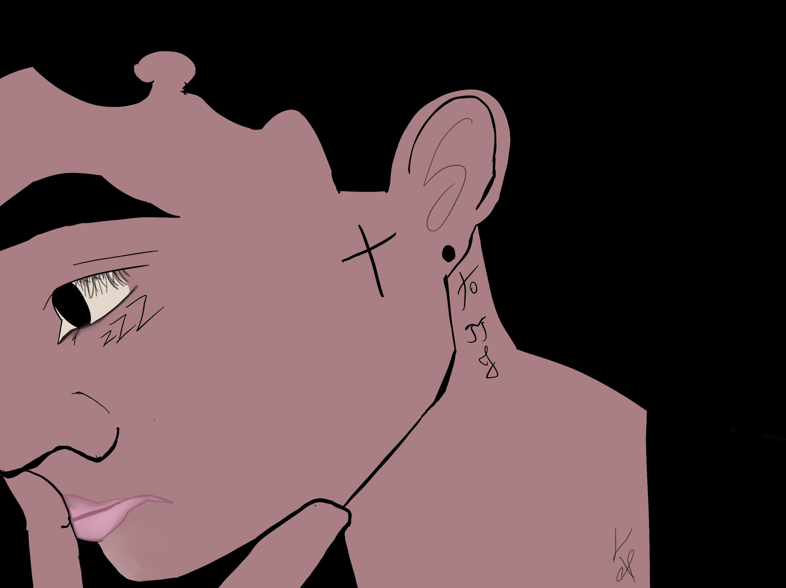
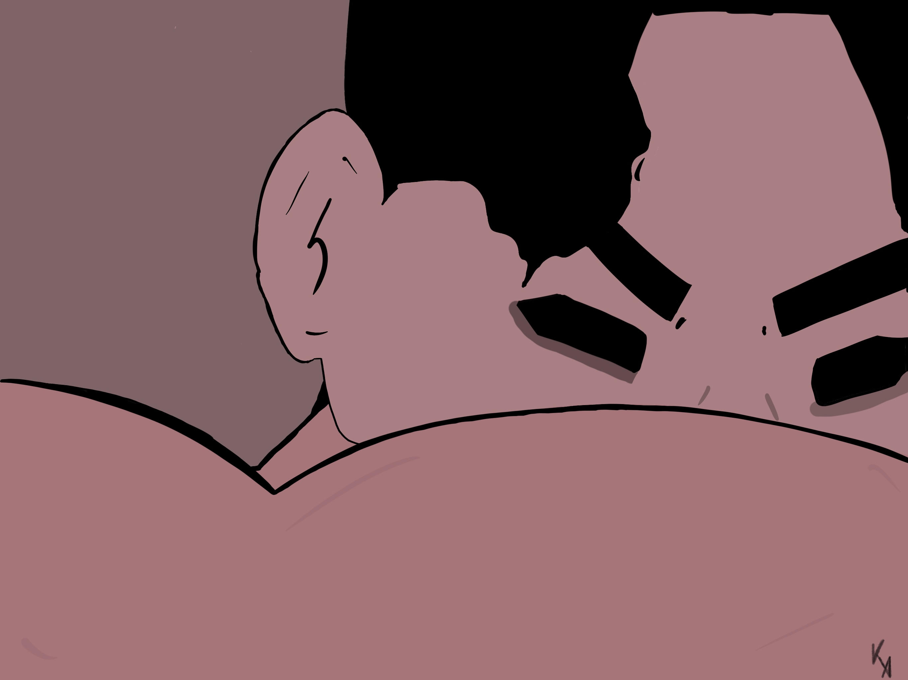

Home
Doggo
Drawing
Photos
Welcome:
Throughout my journey of searching for styles, I stumble upon a youtuber named Simon Dee. He created a vast amount of realistic graffiti projects by hand and procreate. This artwork was inspired by him.
Im also known as:
 